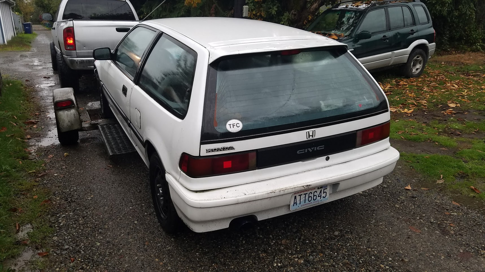
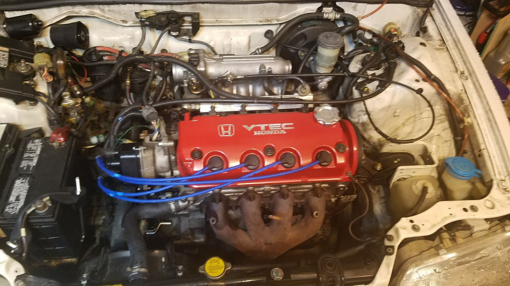

It took many trips to the junk yard, many Craigslist meetups and many hours in the garage
but we transplanted the heart of another newer Honda and brought the Civic back to life.
 |  |  |
 |  |  |
 |  |  |
| Click for full size images. | ||
It all began October 2016 when I towed this magnificent specimen home.
It didn't run. The entire interior was dissasembled. It didn't have any front seats. It didn't have any keys.
But the price was right: $200.

It took many trips to the junk yard, many Craigslist meetups and many hours in the garage
but we transplanted the heart of another newer Honda and brought the Civic back to life.
| | |
| | |
| | |
| Click for full size images. | ||
Repairs/Modifications completed:
|
Planned Modifications/Upgrades:
|
We're ready for the autocross track |
|
|  |
|